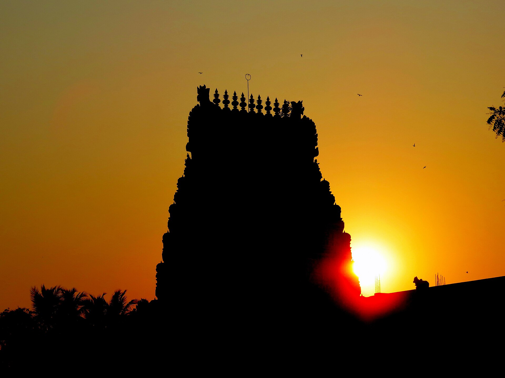

6–60 km · our most-booked package
Navagraha — the nine planets
Kumbakonam sits at the centre of the Navagraha belt. We run all nine shrines as a single full-day A/C trip, visited in the traditional Sun-to-Ketu order.
9Temples, Sun to Ketu
8Mapped below
6–60Km from town centre
Route map
The nine planets, in ritual order
Numbered in the traditional Sun→Moon→Mars→Mercury→Jupiter→Venus→Saturn→Rahu→Ketu sequence — the order pilgrims visit them in, not necessarily the shortest drive.
8 numbered temples are mapped below in ritual order.
Mapped, in order
Also in this circuit (not yet individually pinned):
Naganathaswamy Temple, Keezhaperumpallam (Ketu · 60 km).
A long day, start to finish — we usually leave town by early morning for this one.